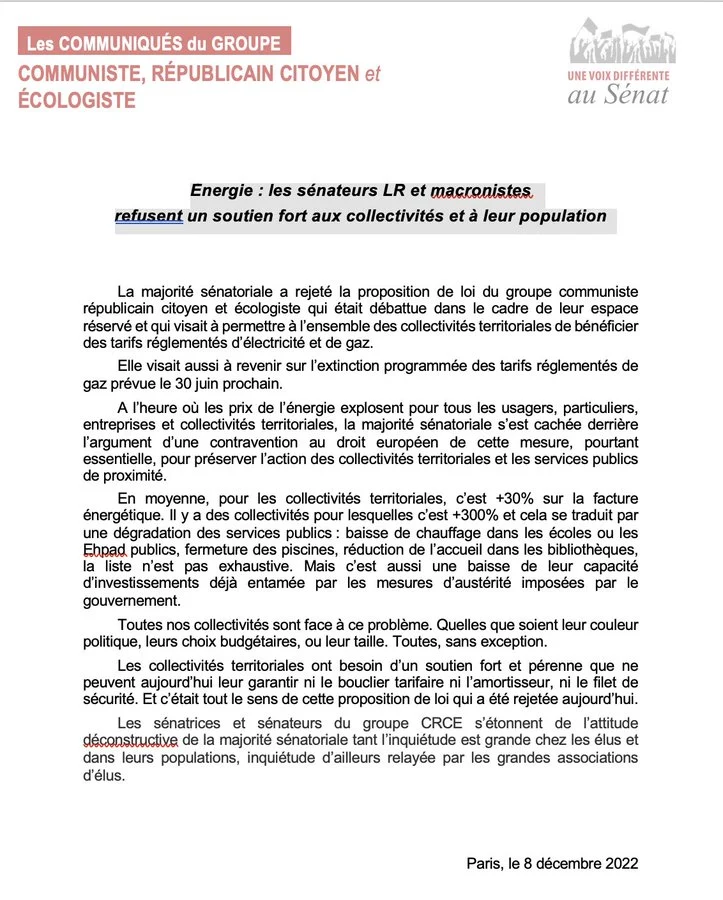

Publication d’archives
Énergie : les sénateurs LR et macronistes refusent un soutien fort aux collectivités et à leur population.
Date indiquée par Facebook · 15 décembre 2022
Texte conservé avec la publication
Contexte du dossier
Le 1er décembre, un texte signé par la sénatrice communiste Céline Brulin décrit les budgets locaux pris entre factures d’énergie, équipements à maintenir et services à préserver. Il présente la proposition de loi CRCE annoncée pour le 7 décembre : accès des collectivités aux tarifs réglementés et abandon de leur extinction pour le gaz. Le message du 15 décembre dénonce ensuite le refus, attribué aux sénateurs LR et macronistes, d’un soutien renforcé. Entre ces deux textes, l’enjeu reste concret : ne pas faire de la fermeture d’un équipement ou de la baisse du chauffage la seule variable d’ajustement des communes.

Sources
Archive rouge · export Facebook · AR-0002-FB-01795
À lire aussi · Collectivités locales – Proposition de loi communiste